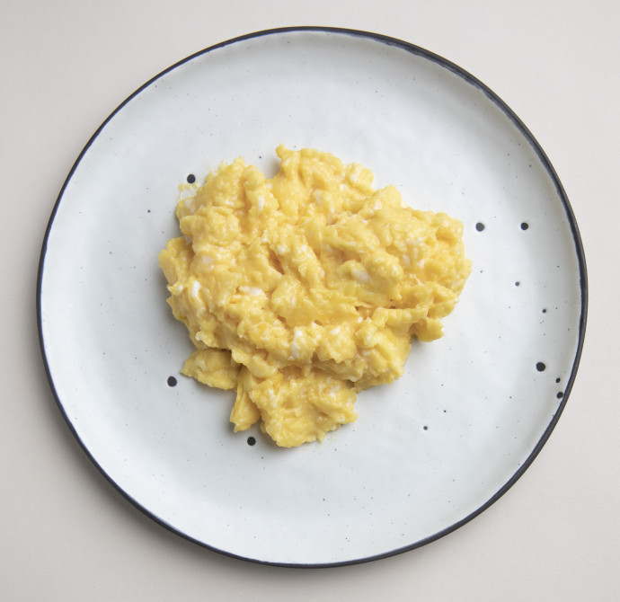

Scrambled Eggs

Scrambled eggs that will melt in your mouth.
Scrambled eggs are a simple recipe but will soon become an every day part of your life due to their ease.
Best served with Ketchup or Brown Sauce.
Ingredients
- 2 large free range eggs
- 6 tbsp single cream or full cream milk
- a knob of butter
Method
- Lightly whisk 2 large eggs, 6 tbsp single cream or full cream milk and a pinch of salt together until the mixture has just one consistency.
- Heat a small non-stick frying pan for a minute or so, then add a knob of butter and let it melt. Don’t allow the butter to brown or it will discolour the eggs.
- Pour in the egg mixture and let it sit, without stirring, for 20 seconds. Stir with a wooden spoon, lifting and folding it over from the bottom of the pan.
- Let it sit for another 10 seconds then stir and fold again.
- Repeat until the eggs are softly set and slightly runny in places. Remove from the heat and leave for a moment to finish cooking.
- Give a final stir and serve the velvety scramble without delay.
Back to Main Page